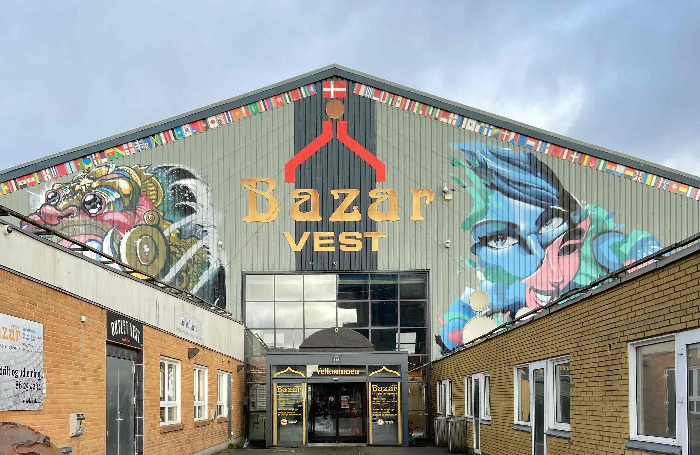
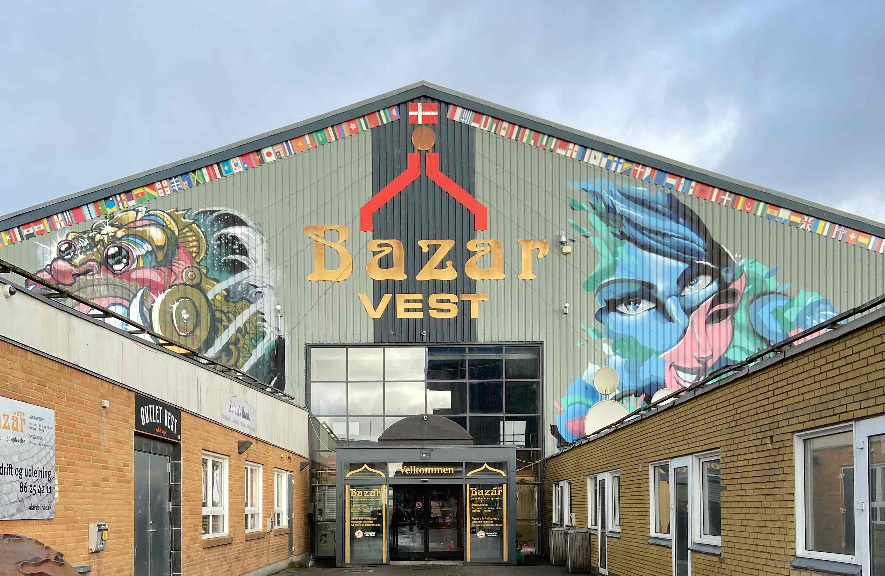

COLORAMA
Bazar Vest
Colorama i Bazar Vest er din malerforretning, der bærer præg af mellemøstlig stemning, med rammer af enhver smag!
Miljøbevidst
Colorama er både en malerforretning og et malerfirma, som har ekstra meget fokus på miljøet. Dette kommer til udtryk med deres store udvalg af Beckers produkter. Beckers var den første producent, som fik deres produkter miljømærket af Svanen.
I dag går hele 74% af danskerne op i, hvad de selv kan gøre for at passe på miljøet, mens 85% af danskerne kender Svanemærket. Dette gør det ideelt for den miljøbevidste bruger, at vælge Colorama i Bazar Vest, som deres foretrukne malerforretning.
Mahmoud Kais
Hos Colorama i Aarhus V har Mahmoud Kais de seneste 16 år haft ansvaret for forretningens fremgang og vækst. Mahmoud er uddannet malermester og havde en drøm om at blive selvstændig. Dette blev en realitet og han er i dag en anerkendt person i lokalsamfundet, som altid er klar med råd og tips til sine kunder.
Mahmoud værdsætter pris på det fællesskab man oplever i Gellerupparken. Hver dag nyder han at kunne stå til rådighed og hjælpe beboerne i området, som også at hans primære kunde. Med mange års erfaring og en maler uddannelse bag sig, har Mahmoud et stærkt tillidsbånd til de lokale kunder.
Kultur i Bazar Vest
Colorama i Aarhus V er ikke en typisk malerforretning. Når du træder ind i butikken, vil du først tænke at den minder om hvilken som helst anden malerforretning. Men bevæger du dig ovenpå, vil du straks fornemme,
at forretningen har et stort udvalg af anderledes produkter. Du vil støde på alt fra smukke farverige tæpper til fletkurve. Det er her det kulturelle twist kommer til udtryk og man forstår lige pludselig hvorfor Colorama er placeret i Bazar vest.
Vi glæder os til at se dig i vores foretning, og give dig en serivice af den højeste kvalitet.

 
